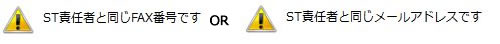

はじめに
本Ｗｅｂマニュアルは、簡易版となります。
操作マニュアルと併せてご覧ください。
操作に慣れていない方は、本ページを立ち上げたまま操作をして頂くと便利です。
操作について、ご不明な点は日本玩具協会（Ｔｅｌ 03-3829-2513 平日：9：00-17：00）までお問い合わせください。
１．システム使用環境について（OSはWindows、指定ブラウザは「Micorsoft Egde」及び「Google Chrome」です）
稼働可能なOSとブラウザについては下記の通りとなります。
OSはWindowsとなり、他のOS(AppleOS、Androidなど)は使用できません。
指定ブラウザは、「Micorsoft Egde」及び「Google Chrome」となります。
（Opera、Safariなどのブラウザでは登録できませんのでご注意ください。 ）
２．インターネット申請以外の、ST申請方法について
インターネット以外の申請方法として、「申請書（紙）」がありますが、
WindowsPCをお持ちでないなど、やむを得ない場合を除き、インターネットによる申請をお願いしております。
やむを得ず「申請書(紙)」をご利用の際は、指定の検査機関に連絡し了解を得た上で、下記のＰＤＦをご利用ください。
（現在、3枚複写の申請様式は廃止しております。）
・申請用紙 （右クリックで「名前を付けて保存」してください。）
３．申請データの入力方法
ログイン後、以下の画面が表示されます。
検索画面がトップページとなります（過去に申請した情報を検索できます）。
＜新規の申請方法＞
・画面の「新規作成」ボタンをクリックします。
申請入力画面が表示されますので、必要事項を入力してください。
＜コピーによる申請の方法＞
更新申請の際、または、シリーズ商品の入力の際は便利です。
（1）過去に申請した情報を「ST番号」または「受付番号」で検索します。
（2）検索結果が一覧表示されます。
（3）コピー元となる申請情報を選択します。
またはをクリックすると、詳細が表示されます。
（4）詳細画面より「コピー」ボタンをクリックします。
（5）情報がコピーされ、入力することができます（元の情報は変更はされません）。
ST番号は空白となりますので、入力していただく必要があります。
＊申請画面の一番下に以下のボタンがあります。
「一時保存」・・・一時的に保存しておく場合にクリックします。検査機関には情報は行きません。
「送信」・・・申請を確定する場合にクリックします。検査機関に申請の情報が送信されます。
＊一旦「送信」しますと、申請者では修正することはできません。
間違って送信してしまった場合は、検査機関にその旨をお伝えください。
「削除」・・・一時保存中のデータを削除します。
「クリア」・・・入力中の項目をすべてクリアします。
４．検索画面について（ログイン後のトップ画面となります）
検索条件は以下の画面より、入力後「検索」をクリックします。
＊「商品名」は、半角文字（商品名カナ）の一部分で検索することができます。
検索結果表示は、最大で500件とさせていただいております。
全件の検索はサーバーに負荷が掛りますので、なるべく検索条件を頂きます様、お願いいたします。
【ステータスとは】
下記の表のように申請の状態を示します。
チェックが選択されている状態です（初期値では全てにチェックされてるいます）。
それぞれのステータスで検索ができますので、必要に応じてチェックをはずしてください。
| ステータス | 説明 |
| 「作成中」 | 一時保存中の状態を示します。 一時保存中のものを検索する場合は、「作成中」にみにチェックをして（他のものは外して）検索します。 |
| 「申請中」 「検査中」 |
検査機関にて検査作業中の状態を示します。 |
| 「合格」 「不合格」 「却下」 |
検査結果が確定した状態を示します。 （ＳＴ番号（または受付番号）等と組み合わせて検索してください）。 |
| 「登録抹消」 | 検査確定後、ST登録を抹消した状態を示します。 |
【有効期限内のデータを検索するには】
有効期限の範囲を以下の様にしてください。
開始：本日の日付（YYYY/ＭＭ/ＤＤ） ～ 終了：本日の日付より＋２年以降の日付（2999/12/31でもOK）
＊ステータスは全てチェック（初期値の状態で結構です）
検索結果は、ＣＳＶ（ＴＡＢ区切り）形式でダウンロードすることができます。
下記のボタンをクリックします。
EXCELで開く場合の方法については、「操作手引書」（P28）をご覧ください。
５．ST番号について
ST番号は、申請企業により付番していただきます。
ST番号は、やむを得ない場合を除き、パッケージに表示のJANバーコードの番号と同一となり、頭2ケタは「45」または「49」（日本を示す国コード）から始まる13桁の数字でなければなりません（注：書籍コード（頭3ケタの 「978」または「192」）での申請はできません）。
（注）・バーコードは、STマークの横である必要はありません。
JANコードの頭7桁または9桁はメーカーコードです。一般財団法人 流通開発システムセンターに正規登録しているものでなければなりません。
バーコードの表示が無い申請品につきましても、上記の条件で申請いただく必要があります。
＊取得したメーカーコードは、日玩協にも登録（申請企業毎）が必要です（→「メーカーコード登録用紙」に必要事項を記入後、日玩協へFAXのこと）。
*JANコードの13桁目の数字は、チェックデジットとなり、前12桁による計算で決まる数字となります。
（参考）外部サイト（以下、一般財団法人 流通システム開発センターWebサイト）
・メーカーコードについて、メーカーコードの取得方法、チェックデジットの計算方法、更新について等
・メーカーコード登録企業検索（メーカーコードで登録内容の確認ができます）
６．枝番号とは
シリーズ商品（色違い）などで、同一のＪＡＮコードの商品についてＳＴ申請をする際に枝番号を使用します。
全種類に「001」から枝番号を付番して、申請していただきます。 パッケージのＳＴマークは13桁のＳＴ番号のみ（枝番号無し）となります。
トレーディングカード類の申請については、こちらの資料をご確認ください。
７．ST親番号とは
検査料金の軽減対象となるシリーズ商品の場合に記入が必要です。
申請商品の１点目が親番号となります（枝番号がある場合はそれも含みます）。
2点目以降に1点目の親番号を記入する必要があります（参考：下図の例）。
（未記入の場合、検査料金の軽減措置が取られない場合がありますのでご注意ください。
また、検査機関の判断（シリーズ商品とは認められない場合）により、軽減措置の対象外となる場合があります。）
８．メーカーコードが未登録と表示された場合には
メーカーコードは、自社でお持ちのもの、OEMのものに限らず、申請企業毎に、日玩協に登録が必要となります。
メーカーコード未登録のメッセージがでましたら、保存後（データは保存できます）、日玩協へ、「メーカーコード登録用紙」に必要事項を記入後、ＦＡＸ(03-3829-2510)してください（登録にお時間を頂戴する場合があります）。
＊メーカーコードは正規取得のものが条件となります（「5.ST番号について」参照）。
９．通知について（検査各種通知）
各種通知（ＥメールまたはＦＡＸ）の種類には以下の種類があります。
| 通知文書名 | 説 明 |
| 玩具安全（ST）検査開始のお知らせ | 検査開始のお知らせは、１３：００、１７：００に送信処理が行われます。 検査機関により、申請品の画像登録が行われたタイミングとなります。 |
| ST申請内容についてのご連絡 | 検査機関より、申請品についての連絡事項を都度、送付いたします。 |
| 玩具安全(ＳＴ)マーク申請製品に関するお知らせ | 発売予定日の２日前に、まだ検査結果が出ていない申請品について、ＳＴマークを付けて製品を出荷をすることの無いよう注意を促すお知らせです。 |
| 玩具安全（ST）検査結果のお知らせ | 検査結果を送付します（即時送信となりますが、Ｅメール指定の場合、最大で30分掛る場合があります）。 |
| 玩具安全（ST）マーク有効期限切れのお知らせ | 有効期限切れの約２か月前にお知らせいたします。 |
送信先の設定の誤りにご注意ください。
１．日玩協登録のST責任者には無条件で送付されます。
送付方法は事前登録の「Eメール」または「FAX」となります。
STマーク使用許諾契約（更新）時に提出様式（事業概況説明書・様式二）にて登録しています。
随時、変更は可能ですので、その際は日玩協にご連絡ください。
（その他、ＳＴ使用許諾契約更新、制度要綱改定、ＳＴ基準改定、セミナー開催などのお知らせをさせていただいております。）
ST責任者の登録内容はログイン後の、画面上部に表示されます。
※通知先に送付宛先（ＥメールまたはFAX番号）が入ります。
変更があった際は、日玩協までお知らせください。
２．上記に加え、申請の都度、申請担当者にも送付設定ができます（ＳＴ責任者含め最大2箇所へ通知）。
申請担当者への通知設定は、申請画面より、以下の入力項目より登録します
（申請の１商品ごとに設定します）。

不要の場合は、「送信しない」を選択してください。
ST責任者と同一の送付先が設定されていますと、エラーになります（2重送信の防止）。
＊送信できない「フリーメールアドレス」
「@hotmail**」「@outlook**」「@aol**」は、当協会からのメールが拒否されてしまうことが確認されています。
１０．「改良申請」について
ＳＴマークを取得してから1年以内の商品（以下、オリジナル商品）について、商品の一部を改良し引き続き販売を行う場合の申請です。
（平成25年2月6日「改良申請」の新設についての案内文）
【申請方法及び条件】
（申請方法）
(1)オリジナル商品を「受付番号」または「ST番号」で検索。
(2)検索結果一覧より詳細「確認」画面をクリック。
(3)「改良申請」ボタンをクリック（入力可能となります。但し入力可能箇所は限定されます。）。
（申請可能な場合にのみ表示されます。
但し、申請の条件に合致しない場合は、検査機関の判断で申請を無効にする場合があります）
(4)必要項目を入力し、確定の場合は「送信」をクリック
（注意及び申請の条件）
１．改良箇所につきましては「備考」欄に詳細をご記入ください。
２．条件として、当該申請品が、オリジナル商品と同一性があること、オリジナル商品が有効期限内の場合に限ります。
（「商品名」「ＳＴ合格番号」等の変更はできません）
３．改良申請は１回のみとさせて頂き、ＳＴ基準をまたがっての改良申請は出来ません。
４．改良申請の際のＳＴマーク有効期限は、オリジナル商品の期限日と同じになります。
５．改良申請の条件を満たしていない場合、検査機関の判断により、申請を無効にする場合があります。
１１．STの更新申請について
旧受付番号のメモをお手元にご用意いただき、「新規作成」か、または「コピー機能」（「3.申請データの入力方法」を参照）を使用してのデータ申請してください。
注意が必要な項目は下記となります。
（旧受付番号）
前回の受付番号（7ケタの数字）を入力します。
（発売予定日→メーカーが出荷する日）
更新申請では、「STマーク」の年表示は、申請時の西暦年下２桁の数字が入った製品
で受検しなければなりません（下記のSTマーク表示例をご覧ください）。
検査合格後、新たなSTマークを表示した商品を出荷する予定日を入力してください。
（初回生産個数）
上記同様に、その際に出荷する際の、おおよその個数を入力してください。
（ＳＴ基準）
現在のST基準は「ST2016基準」となります。
（商品到着予定日）
検査機関に申請品を送付する予定日を入力します。
データ「送信後」 申請品を担当検査機関に送付していただきます（更新であっても、検査は必要となります）。
申請品のSTマークの年表示は、申請年(西暦)の下２桁でなければなりません。
＊↓は2018年1月~12月の期間中に申請した場合のSTマーク表示例
１２．「商品問合せ先」の入力方法について
「商品問合せ先」は、一般公開の「ST検索サイト」にて開示している情報となります。
（※ST検索サイトは、ST番号で商品名、問合せ先（会社名）、検査合格日を検索できる一般公開のサイトです）
会社名を入力します。（STマーク使用許諾契約企業名であることが必須です。）
「選択」は、過去に入力した履歴から会社名を参照し登録する機能です。
複数のOEM供給先がある場合がありますので、会社名を過去に入力した履歴から参照登録ができるようしています。
但し、この時の会社名は、STマーク使用許諾契約の会社名でなければなりませんので、そうで無い場合は自社名で登録してください。
１３．「商品分類コード」の入力方法について
業界統一商品分類コードを入力します。
大分類（１桁）、中分類（2桁）、小分類(3桁)の6桁からなるコードです。
（業界統一分類コード表（PDF）はこちらを参照）
「選択 」より、商品分類コードを選択することができます。
商品分類コードが表示されますので、該当分類を選択します。
（一番近いと思われる分類を選択してください。）
１４．第３部報告書の入力方法（他の指定検査機関（海外・国内）で受検し、その報告書がある場合のみ）
１．第３部報告書
他の指定検査機関（海外、国内）が行った、第3部（化学的特性）に関しての添付資料がある場合にその検査機関名（全て）を選択して下さい。
選択する（該当の検査機関名を１クリック）すると青い帯が付きます。
（↓選択された状態 例．「文化用品・香港」を選択）

解除方法→「Ctrl」を押しながら同箇所をクリックします。
複数選択する場合は、「Cｔｒｌ」を押しながら該当の箇所をクリックしてゆきます。
２．材質の開示
材質の開示資料（（例：スライム・粘土等について、成分表 ＭＳＤＳ等資料）がある場合は、「あり」にチェックを入れて下さい。
３．その他の添付資料
上記以外の添付資料がある場合は、その資料名を記載して下さい。
（添付資料は、検査機関にそのコピーをお渡しください。）
１５．「使用材料明細」の入力方法
入力エリアより、材料明細を入力し、「追加」をクリックします。
下段に、明細が追加されます。
２点目以降も、同様となります。
【追加後の訂正・削除について】
追加した明細エリアより、「修正」をクリックしますと、入力エリアに該当の明細が表示されますので、修正後、「追加」をクリックします。
「削除」をクリックしますと、該当の明細は削除されます。
【注意】
材料明細は、必須項目となります。
・「登録番号」について
使用材料の登録制度となります。
詳細につきましては検査機関にお問い合わせください（未登録の場合は空白になります）。
未入力または入力不備の場合、検査機関の判断により、データを申請画面に戻させていただく場合があります(一時保存の状態に戻します)。
その場合、E-MAiLまたはFAXにてその旨を連絡させて頂きます。
１６．「磁石を使用する玩具」・「洗濯可表示のある玩具」の申請品について
・「磁石」使用の申請品については、その旨を「備考」欄に記載して下さい。
・申請品に「洗濯可」と表示されている場合は、その旨を「備考」欄に記載して下さい。
１７．STマークの有効期限について
STマークの有効期限は合格より2年間となります（玩具安全マーク使用許諾契約書 第1条第2項～）。
有効期限切れになる約２か月前にEmailまたはFaxにてご案内しております。
継続してSTマーク付玩具を出荷する際は、期限切れとなる前に、検査申請を受け、玩具安全基準に合格する必要があります。
更新が不要の場合は、届け出は不要です。
また、ST使用許諾契約（１年更新）が切れますと、すべての申請品は失効扱いとなり、以降、STマーク付商品を出荷することを禁じています（玩具安全マーク使用許諾契約書 第10条～）。
１８．ST検索サイト（一般公開）について
ST合格商品を、一般公開向けの「ST検索サイト」に掲載します（合格日の翌日）。
ST番号より検索することで、正規にSTマークを取得した商品かが分かります。
本サイトの利用者は、一般消費者、流通関係者を想定しております。
掲載の内容は、
「商品名」、「問合せ先（会社名）」、「検査合格日」となります。
*「問合せ先」は、ST使用許諾契約企業であることが必要です。
１９．合格書の再通知を依頼したい
日玩協にその旨をお知らせください（TEL 03-3829-2513 ST番号または受付番号が必要です）。
再発行処理をさせていただきます（送付先は、日玩協登録のSTご担当者のEメールまたはFAXとなります）。
また、お時間をいただく場合がありますので予めご了承ください。
＊送信できない「フリーメールアドレス」
「@hotmail**」「@outlook**」「@aol**」は、当協会からのメールが拒否されてしまうことが確認されています。
２０．ST申請システムのID・パスワードについて
ID・パスワードは１企業に1つ発行しています。
ID・パスワードの取扱いには、ご注意ください。
担当者が変わる際なども含め定期的なパスワードの変更をお勧めいたします。
【パスワードの変更方法】
ログイン後、「パスワード変更」ボタンをクリック後、変更画面が表示されます。
【紛失した場合は】
日玩協事務局(TEL 03-3829-2513)へお問い合わせください。
確認後、再発行させていただきます。
（日玩協登録の、ご担当者住所へFAXにてご連絡いたします。 電話口でのお伝えは出来ません。）
２１．「業界活用」（ST商品情報の活用について）
「商品情報」（商品名等の基本情報）、「画像」（検査機関撮影）のデータについて、個々の製品毎に業界活用を「可」としたデータを、「発売予定日」以降、ジーエフケー・インサイト・ジャパン(株)*（以下「GfK社」）に提供し、同社の商品マスターの増強・補完に協力しています。
なお、発売予定日以降にあっても、まだ未発表の状態の商品情報につきましては、当協会は、GfK社が秘密を保持するよう同社との間で秘密保持契約を締結しています。
（なお、GfK社が協力会社に業務委託する場合には、同社は、協力会社との間で上記契約と同等の内容を含む秘密保持契約を締結しています。）
*GfK社は、㈱日本玩具情報テクノロジー（JATY）（当協会から分離独立した玩具売上分析会社）が行っていた玩具売上分析事業を、平成21年12月に承継し営業を行っています。
当該事業の承継の際に、当協会は、ST商品情報を引き続きGfK社に提供し、同社の商品マスター増強・補完に協力することとしたものです。
代わりに、GfK社は、年に１回、同社が収集した売上データをもとに、年間の玩具売上分析レポート（要約）をST契約企業に提供するとともに、当協会のセミナーに講師を派遣・説明を行っています。
２２．エラーメッセージ
＊印は必須項目となり、未入力であることのメッセージが表示されます。
それ以外のエラーメッセージには以下のものがあります。
| １． |  | |
担当者への通知指定が、ST責任者の宛先（必ず送付します。予め日玩協で登録）と同じ「メールアドレス」または「ＦＡＸ番号」が指定されています。 |
||
| ２． | ||
| ＳＴ番号のチェックデジット(13ケタ目の数字)が違います。 チェックデジットとは、入力ミスを防ぐためのもので、13ケタ目に一定の計算式で求められる数字が入ります。 番号に入力間違いが無いかどうか、ご確認してください。 チェックデジットの計算については、こちらのサイトをご覧ください。 |
||
| ３． | ||
| 「商品名カナ」は、半角文字で入力してください。 全角のスペースでもエラーとなります。 |
||
| ４． | ||
| メーカーコードが未登録です(使用するメーカーコードは、日玩協に登録が必要です)。 そのまま登録ができますので、別途、メーカーコード登録用紙（→「メーカーコード登録用紙」）にご記入いただき、日本玩具協会まで、ＦＡＸ（03-3829-2510）にてご送付ください（登録まで、しばらく時間を頂く場合があります。）。 ＊メーカーコード ST番号（JANコード）の頭7桁または9桁はメーカーコードです。 頭2ケタは国コードとなり、日本の国コードを示す「49」または「45」でなければなりません。 それ以外の登録があった場合は、ST申請は合格にはなりません。 また、一般財団法人 流通開発システムセンターに正規登録しているものでなければなりません。 メーカーコードは、日玩協にも登録（申請企業毎）が必要です |
||
| ５． | ||
| 現在のＳＴ基準は「ST2016」になります。 コピー元が古いＳＴ基準のデータとなっていたためにエラーとなりました。 ＳＴ基準を「ST2016」に選択し直してください。 （「ST2012」基準は、2018年3月31日をもって申請不可となっております） |
||
| ６． | ||
| STシステムサーバーとの通信が停止している状態のメッセージとなります。 何度もこのメッセージがでる場合は、ブラウザを一旦閉じて、再度立ち上げてください。 これは、STシステムサーバーの問題ではなく、ブラウザの処理能力を超えてしまった場合に起こる現象となります。 （ブラウザを再立ち上げすることで、バッファがクリアになり正常な状態に戻ります。） 起こる原因として・・・ クリックを間をおかずに何度も行った場合（ダブルクリックなど）に多く発生する現象です。 |
||